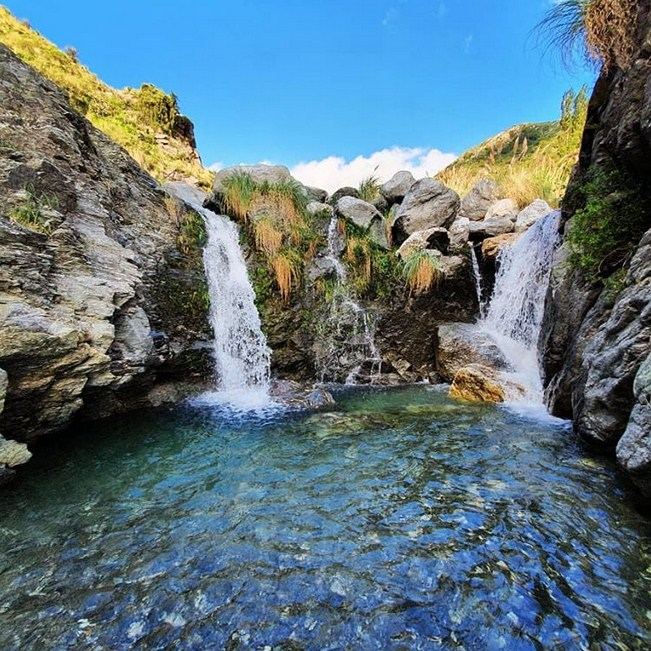

Villa Merlo
Merlo: Cuyo nombre oficial,que permite diferenciarlo del municipio bonaerense homónimo,es Ciudad Villa de Merlo, derivado del nombre original Melo en honor a Pedro Melo de Portugal es una ciudad del departamento Junín de la provincia de San Luis, Argentina. Se caracteriza por ser uno de los microclimas del mundo, la ciudad con mejor calidad ambiental del país y la tercera ciudad con mayor población de San Luis, con más de 17.084 habitantes según el último censo nacional del año 2010. Desde la primera mitad del siglo XX, es uno de los destinos turísticos más relevantes de la República Argentina y es también una de las ciudades con mayor crecimiento demográfico (84%) a nivel nacional durante la primera década del siglo XXI.